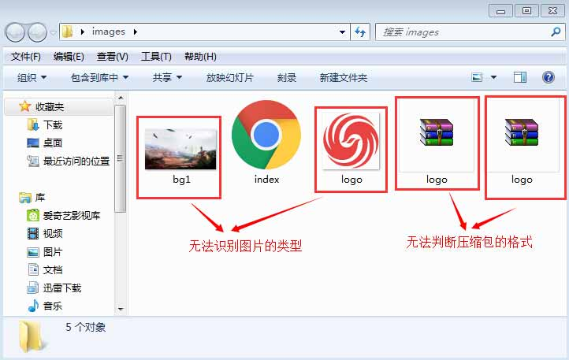
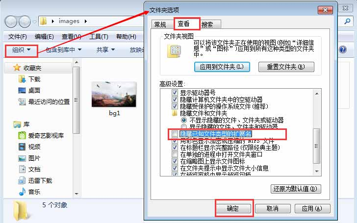
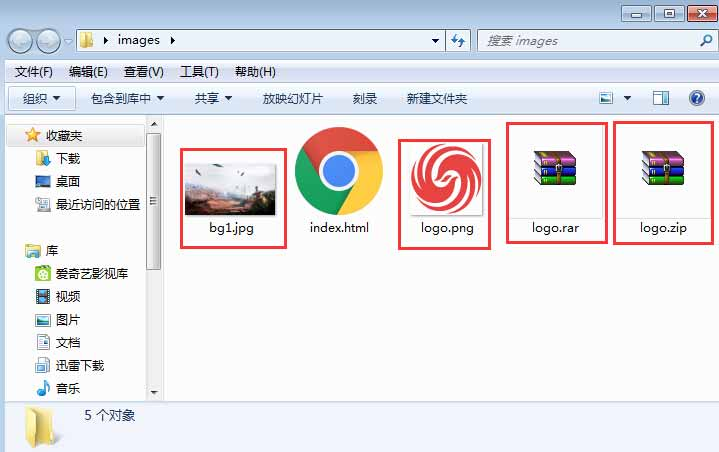
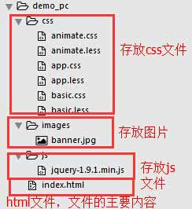
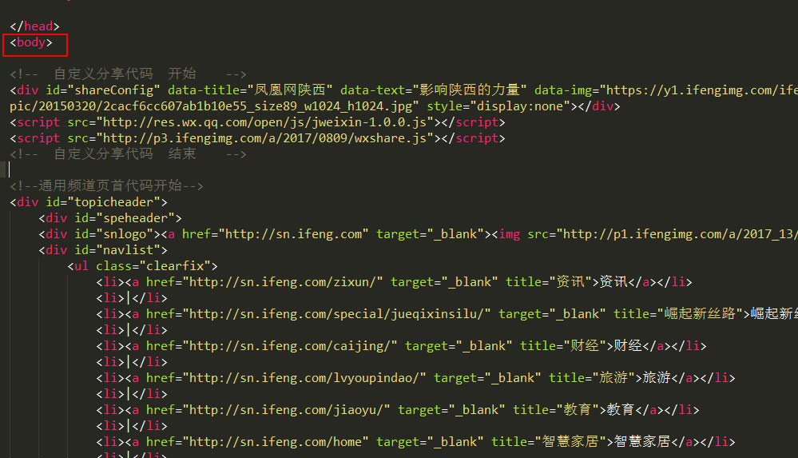

Ctrl + C 复制选择的项目
Ctrl + X 剪切选择的项目
Ctrl + V 粘贴选择的项目 Ctrl + Z 撤消操作
Ctrl + Y 重新执行某项操作
Ctrl + S 保存
Ctrl + Shift + S 另存为
Ctrl + N 打开新窗口
Ctrl + Shift + N 新建文件夹
Delete 删除所选项目并将其移动到“回收站”
Shift + Delete 不先将所选项目移动到“回收站”而直接将其删除
ALT+TAB 切换应用
CTRL+TAB 当前应用标签的切换
Win：打开或关闭开始菜单
Win + D：显示桌面
Win + M：最小化所有窗口
Win + SHIFT + M：还原最小化窗口到桌面上
Win + E：打开我的电脑
<!DOCTYPE HTML>
<html>
<head>
</head>
<body>
</body>
</html>
<style>
h1{font-size:14px;}
p{color:#252525;}
a{text-algin:center;}
</style>
<script text="text/javascript">
document.getElementById("#cro");
$("#cro").css("color","red");
</script>
div、li、p、a、img、及h系列
<!DOCTYPE HTML>
<html>
<head>
</head>
<h1>这是一个主标题标签</h1>
<h2>这是一个副标题标签</h2>
<div>这是一个div标签</div>
<ul>
<li>这是一个无需列表标签</li>
<li>这是一个无需列表标签2</li>
</ul>
<p>这是一个段落标签</p>
<a href="#">这是一个超链接标签</a>
<img src="" alt="这是一个图片标签">
<body>
</body>
</html>
<a href="链接的地址" target="_blank" >这是一个超链接标签</a>
<img src="图片的地址" alt="这是一个图片标签">
关于a标签的属性: 了解更多a
_blank:浏览器总在一个新打开、未命名的窗口中载入目标文档。
_self:默认。在相同的框架中打开被链接文档。
_parent: 在父框架集中打开被链接文档。
_top:在整个窗口中打开被链接文档。
关于img标签的属性: 了解更多img
不设置“显示文件后缀名”弊端：无法识别文件的格式 分不清图片的格式 文件调用容易出错
未设置如下图：
设置方法：打开文件夹——"组织"——“文件夹选项”——“查看”——取消“隐藏已知文件的拓展名”——“确定”

设置完成效果如下图：(文件格式鲜明)
sublime编辑器优点：
下载链接：
提取码：5bbm
提取码：hg4p
专题组成部分

专题包至少含有一个"index.html",其他文件并不是必要的
上传专题的技巧：如果出现代码未闭合的情况，你可只压缩"index.html"上传（节约上传时间）,后台检查通过后再整包上传
background:#000 url(images/bg1.jpg) no-repeat center 0;
<!-- 海报内容区域开始 -->
<div class="part part1"></div>
<div class="part part2"></div>
<!-- 如需增加更多，以次增加下面代码，并以次修改后面的数值 -->
<!-- <div class="part part3"></div> -->
<!-- 海报内容区域结束 -->
<!-- 海报内容区域开始 -->
<div class="part part1"></div>
<div class="part part2"></div>
<div class="part part3"></div>
<div class="part part4"></div>
<div class="part part5"></div>
<!-- 如需增加更多，以次增加下面代码，并以次修改后面的数值 -->
<!-- <div class="part part3"></div> -->
<!-- 海报内容区域结束 -->
<style type="text/css">
.part{width:100%; background:url(images/bg1.jpg) no-repeat center 0; height:497px;}
.part1{background-image:url(images/bg1.jpg); height:497px;}/*海报第一块图片设置，图片的地址和高度*/
.part2{background-image:url(images/bg2.jpg); height:497px;}/*海报第er块图片设置，图片的地址和高度*/
</style>
<style type="text/css">
.part{width:100%; background:url(images/bg1.jpg) no-repeat center 0; height:497px;}
.part1{background-image:url(images/bg1.jpg); height:497px;}/*海报第一块图片设置，图片的地址和高度*/
.part2{background-image:url(images/bg2.jpg); height:497px;}/*海报第二块图片设置，图片的地址和高度*/
.part3{background-image:url(images/bg2.jpg); height:497px;}/*海报第三块图片设置，图片的地址和高度*/
.part4{background-image:url(images/bg2.jpg); height:497px;}/*海报第四块图片设置，图片的地址和高度*/
.part5{background-image:url(images/bg2.jpg); height:497px;}/*海报第五块图片设置，图片的地址和高度*/
</style>

<!-- 自定义分享代码 开始 -->
<div id="shareConfig" data-title="凤凰网陕西" data-text="影响陕西的力量" data-img="https://y1.ifengimg.com/ifengimcp/pic/20150320/2cacf6cc607ab1b10e55_size89_w1024_h1024.jpg" style="display:none"></div>
<script src="http://res.wx.qq.com/open/js/jweixin-1.0.0.js"></script>
<script src="http://p3.ifengimg.com/a/2017/0809/wxshare.js"></script>
<!-- 自定义分享代码 结束 -->